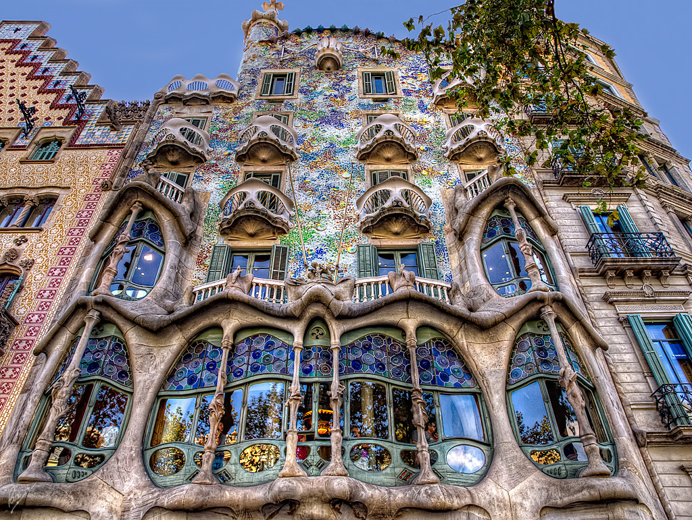
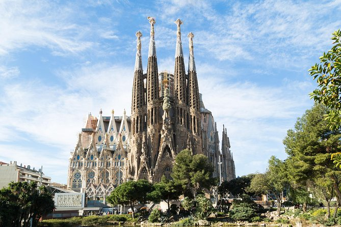
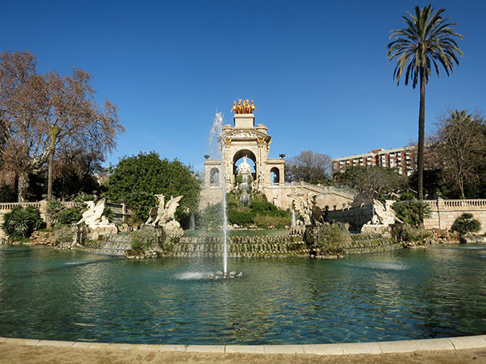
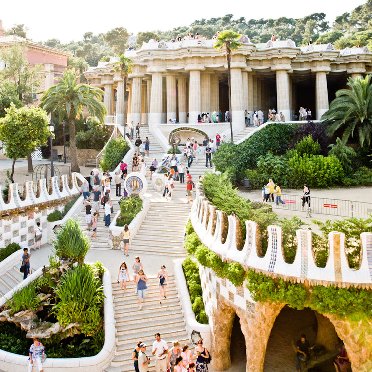
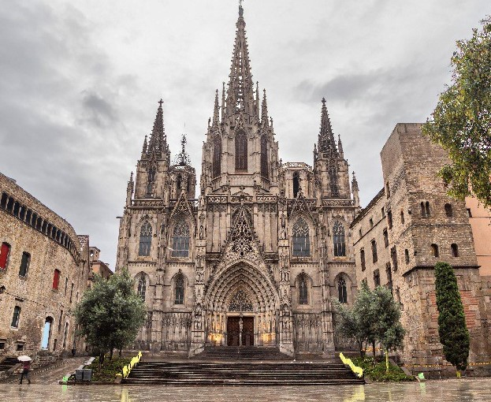
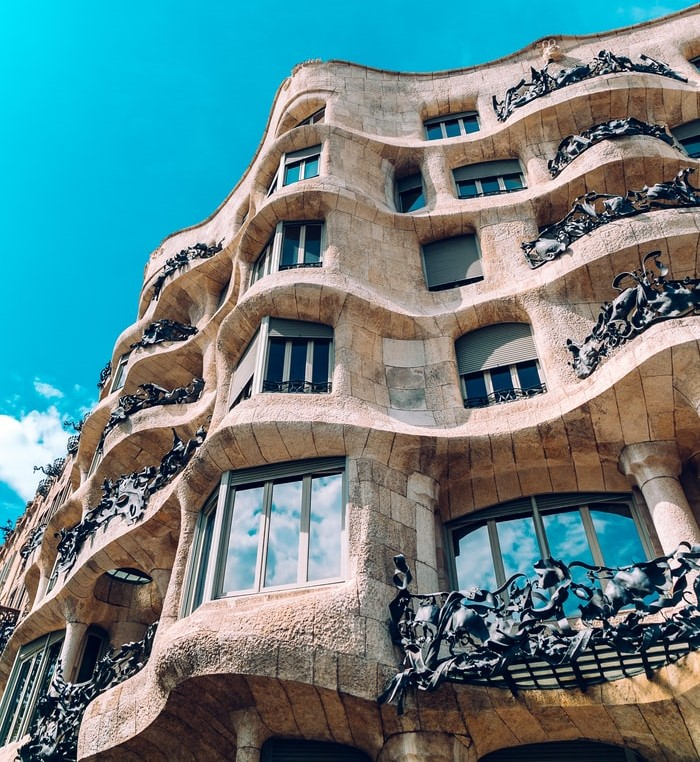
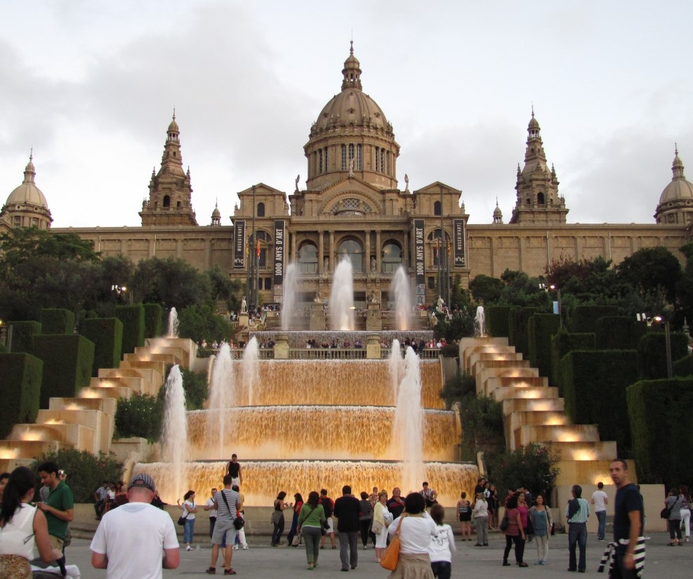
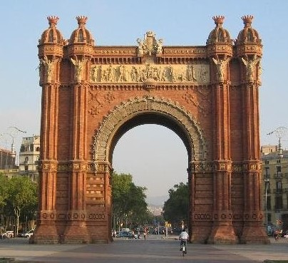
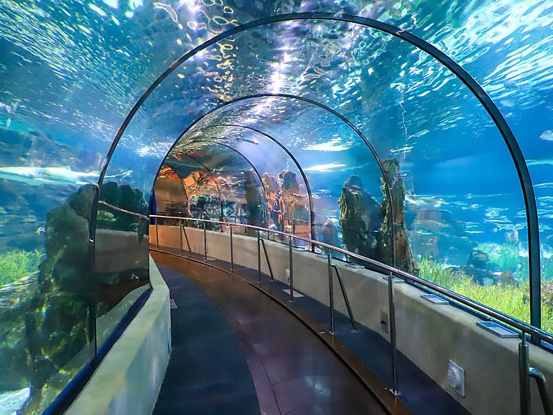

Casa Batlló
La Casa Batlló es un edificio obra del arquitecto Antoni Gaudí, máximo representante del modernismo catalán. Se trata de una remodelación integral de un edificio previamente existente en el solar, obra de Emilio Sala Cortés.

Sagrada Familia
El Templo Expiatorio de la Sagrada Familia, conocido simplemente como la Sagrada Familia, es una basílica católica de Barcelona (España), diseñada por el arquitecto Antoni Gaudí. Iniciada en 1882, todavía está en construcción. Es la obra maestra de Gaudí, y el máximo exponente de la arquitectura modernista catalana.

Zoológico de Barcelona
El Parque Zoológico de Barcelona es un zoológico situado en el parque de la Ciudadela, en Barcelona. Se eligió su emplazamiento debido a que los edificios del parque estaban disponibles tras la Exposición Universal de Barcelona de 1888. Fue inaugurado el día de la Mercè, patrona de Barcelona, del año 1892.

Parque Güell
El parque Güell es un parque público con jardines y elementos arquitectónicos situado en la parte superior de la ciudad de Barcelona (España), en las estribaciones de la sierra de Collserola.

Catedral de la Santa Cruz
La Santa Iglesia Catedral Basílica Metropolitana de la Santa Cruz y Santa Eulalia también llamada, en lugar de catedral, es la catedral gótica de Barcelona, sede del Arzobispado de Barcelona, en Cataluña, España.

Casa Milà
La Casa Milà, llamada popularmente «La Pedrera», es un edificio modernistanota obra del arquitecto Antoni Gaudí, construido entre los años 1906 y 1910 en el distrito del Ensanche de Barcelona, en el número 92 del paseo de Gracia.

Museo Nacional de Arte de Cataluña
El Museo Nacional de Arte de Cataluña, también conocido por sus siglas MNAC, está situado en la ciudad de Barcelona. Destaca por su colección de arte Románico, considerada una de las más completas del mundo.

Arco de Triunfo
El Arco de Triunfo es un monumento situado en la confluencia entre el paseo de Lluís Companys, el paseo de San Juan y la ronda de San Pedro, en la ciudad de Barcelona. Fue diseñado por el arquitecto José Vilaseca como entrada principal a la Exposición Universal de Barcelona de 1888.

Aquarium de Barcelona
L'Aquàrium de Barcelona, situado en el Puerto Viejo de Barcelona, es el principal y único gran acuario de la ciudad y de Cataluña. Además, es el centro más importante del mundo en temática mediterránea. El complejo, que fue inaugurado en 1995, dispone de 35 acuarios diferentes que contienen unos 11.000 animales pertenecientes a 450 especies distintas.